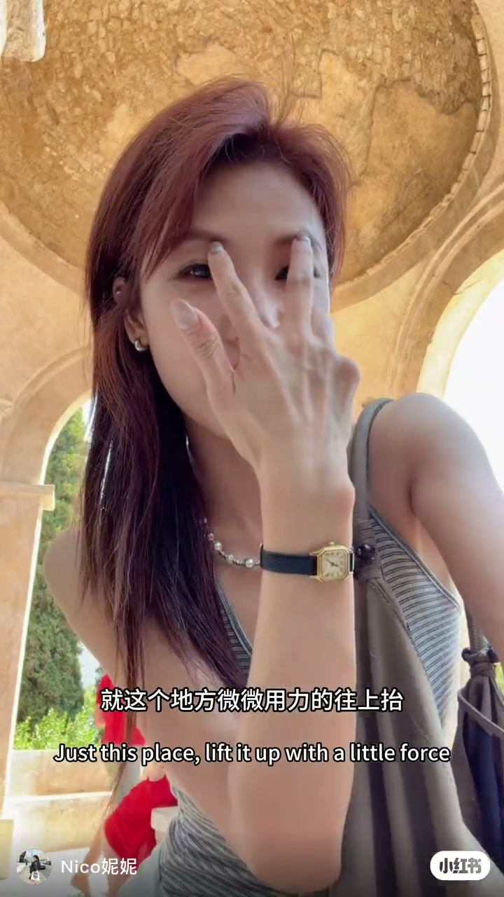
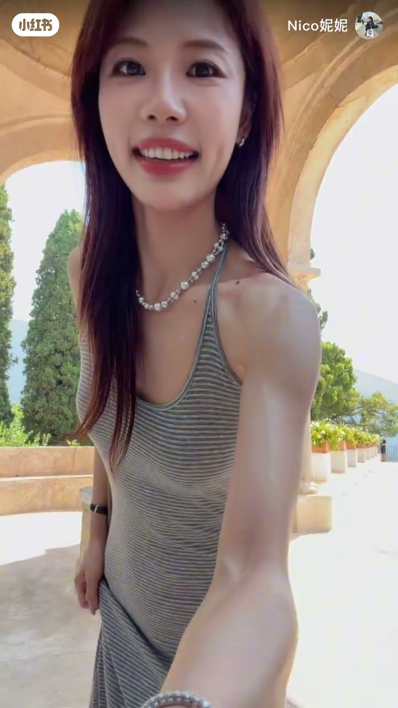
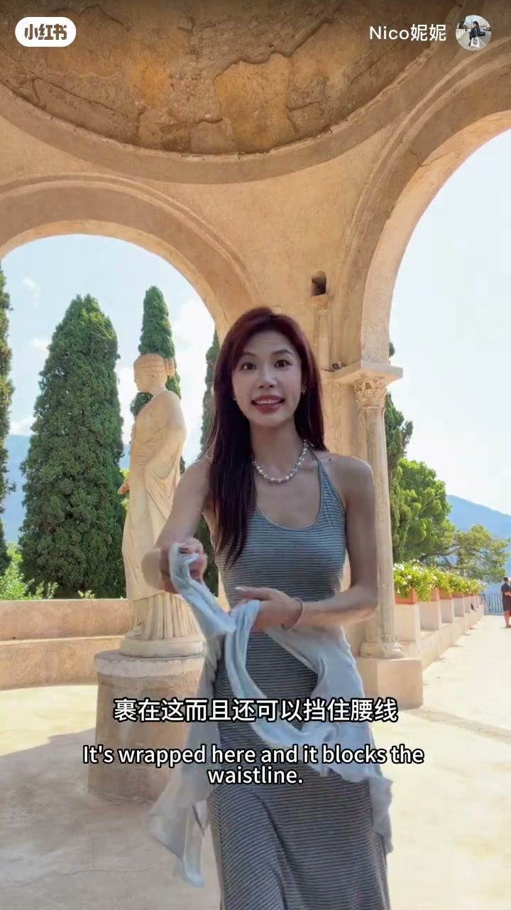
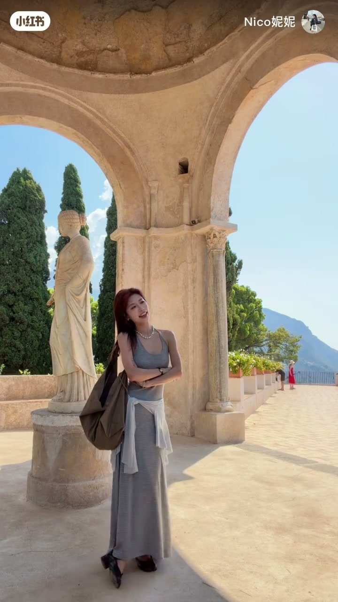
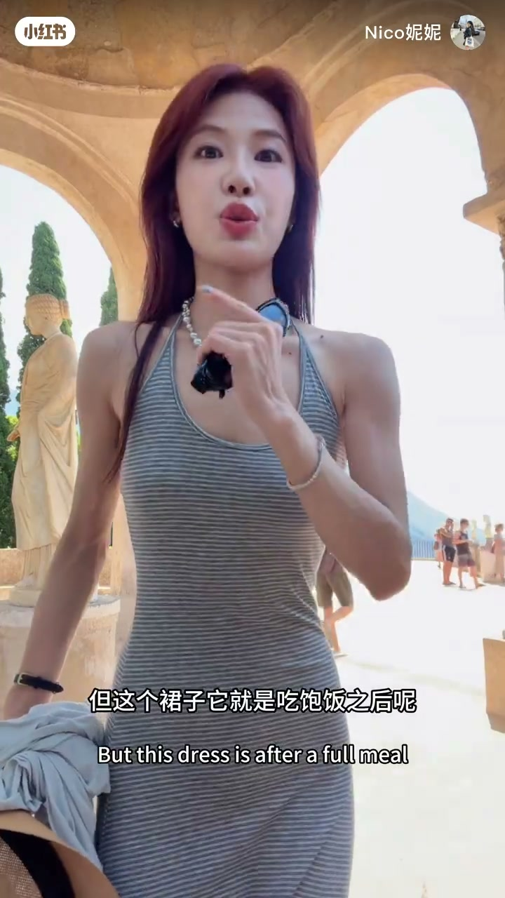

内容要点
一支 2 分 56 秒的女生拍照姿势分享。主题是「穿裙子怎么拍照不尴尬」。除了裙子本身的拍照姿势（提裙、侧身看展、外套挡腰线），还有三个小道具技巧：帽子的佩戴角度、墨镜要露出眉毛、以及用包/外套辅助构图。最后实穿评测一条收腰长裙，讲小个子怎么穿不显五五分、走出温柔姐姐风。
知识结构
拍照假笑有讲究：想天真就嘴角用力往上抬，想温柔就嘴角往外弯，想威严就收起来。戴帽子要调对角度才有牛仔感；戴墨镜时眉毛一定要露出来，遮住眉毛就会显得奇怪。
姿势一：挎上包、提裙摆，配温柔假笑；姿势二：穿裙子看展时侧身、裙摆自然垂落。吃饱和裙子料子薄时，拿件小外套搭在身前，还能挡住腰线。
收腰位置决定比例：164 的身高，收腰收得好就不显五五分。料子轻薄但垂感好，小肚子友好；配开衫遮手臂更帅气；长到脚面的裙子走起来有温柔姐姐风。
穿裙子拍照三招：①表情管理——天真/温柔/威严三种笑；②小道具——帽子调角度、墨镜露眉毛、外套挡腰线；③姿势——提裙、侧身看展，配合包和开衫。选裙重点看收腰位置和垂感。
00:00-00:44表情与小道具管理
「大部分人自己照镜子假笑」——开场就是笑容管理课。「如果想笑天真一点的话，这个地方用力往上抬；如果想笑得温柔的话，这个地方往外弯；如果想笑得威胁一点的话……」三种笑各有对应的小肌肉动作。
帽子技巧：「我之前一直发现我戴的这种像牛仔一样的帽型，每次戴上都没有说很好看。今天就发现这样戴才有感觉，就会有那种牛仔的感觉是不是？牛仔女郎。」——角度对了才有感觉。
墨镜技巧：「你戴墨镜总是戴得不好看的话，有可能是因为你戴墨镜的时候让眉毛遮住了。把眉毛露出来，这样就不会怪了。」

00:44-01:37穿裙子的两个姿势
「穿裙子拍照本人常用的姿势，就是那种怕尴尬那种。」第一个姿势：挎一个包包（手包都可以），把包拿开，「第一个姿势就是我最常用的提裙子」，配上前面的温柔假笑。
「第二个就是比如穿裙子看展。看展的话就是这个脚往前——因为我们穿裤子的时候是那样拍，那穿裙子的话就像这样子拍。」也配上温柔的假笑，「这种假笑是一种礼貌，也是一种警告的感觉」。
「如果说你的裙子面上是比较薄一点的料子，你吃饱了饭的话，你可以拿个这个小外套这样子，而且还可以挡住腰线。」


01:37-02:56裙子实穿测评
「你要是喜欢这种裙子，然后又不是特别高，你看像我是 164 的身高，他穿的是这样子。」重点看收腰：「如果穿这种裙子，这里的收腰位置收得不好的话，其实很容易显五五分，特别是不是很高的时候。」
「你看我的臀线在这，我上半身有这么长，但这条裙子是看不出来的，因为收腰收在这里就特别好。」
料子与细节：「这个裙子的板型、垂直感做得非常好，不是那种特别厚，现在可以穿。」吃饱饭之后可以有肚子，因为这种料子就是这样；「胳膊肉多了或者露出膀子不大合意的话，就把开衫穿上，非常帅」。
「如果说你想要穿出那种温柔姐姐风的话，你可以试试穿这种比较长到脚面的裙子，它走起来就是那种温柔姐姐的感觉。」


完整转录（143段）
以下文本由 Whisper medium 模型自动转录，可能存在少量识别误差，已尽可能修正。
大部分人自己跟上镜假笑
首先第一个天真心
如果想笑天真一点的话就
这个地方
用力往上抬
这样子
然后如果说想笑得温柔
温柔的话就这个地方往外弯
啊 这样就很温柔
然后如果说想笑的威胁一点就
然后我跟你们讲就是
我之前一直发现我戴的这种帽子
就像牛仔一样这种帽型
因为我觉得我每次戴上就是这个样子
就是没有说很好看
然后我最近
不是最近
就今天就发现这样子戴
这样子
哎 只有要戴
哎 就有感觉是不是
就是会有那种牛仔的感觉是不是
牛仔女郎
对不对
然后我还要跟你讲
我说你觉得自己戴墨镜
总是戴得不好看的话
有可能是
你戴墨镜的时候呢
让你眉毛遮住
我给你演示一下
如果甚至戴成这个样子
哦 正常不会戴着了
就这样子
这样子
哎 把这个角度挡住
这样子
就是怪怪的
但是如果说你把眉毛露出来
这样就不会怪了
戴墨镜就是这样子
然后有人问我说穿裙子怎么办
这种拍照我帮你扣住很喘
穿裙子拍照本人常用的姿势啊
就是那种哀人怕尴尬那种
给你们演示一下
首先你要垮一个包包
垮手包都可以
然后拿这个拿开
然后呢
第一个姿势
哎 这后面有个人
我快拍到他了
你就会挡住他了
第一个姿势就是我最想用的提裙子
就是
他像那个刚刚教你们那个温柔假笑
对 这个是第一个
然后第二个就是
比如说穿裙子看展
对 看展的话就是
这个角往前
因为我们穿裤子的时候
不是跟你们说
不是就这样拍吗
那穿裙子的话就像这样子拍
对 谢谢
然后也是刚刚那个温柔的假笑
这个假笑就是那种微笑
是一种礼貌
也是一种警告的感觉
如果说你的裙子
面上是这一种
就是比较薄一点的裙子的话
你吃饱了饭的话
你可以拿个这个小外套
这样子
我在站
而且还可以挡住腰线
看这样子
不用把东西
微笑是一种礼貌
也是一种警告
怎么看不见酒
怎么往下倒
这样
对 像这样子
好吃 真的好吃
今天我体验
今天我体验
这裙子感觉特别好的裙子
就是你要是喜欢这种裙子
然后你又是不是特别高
你看像我是164的这个身高
我给你看他穿的是这样子
我现在发现
如果说穿这种裙子
就是这里的这个收腰
这个位置说得不好的话
其实会显得很容易显得五五分
特别是不是很高的时候
其实我真的是五分
你看 我的臀线在这
我上半身有这么长的
但这个证明是看不出来
因为他收腰收在这里就特别好
然后这个裙子料的
蛮好的 蛮好的
就不是那种特别厚
现在可以穿
它是一个这个条
我里面穿的是一个SBT的胸贴
对 而且它收腰真的收的位置很好
板心也特别好
看 这个是PSO给我寄的
但这个裙子它就是吃饱饭之后呢
这就可以有小肚子
因为这种料就是这样子
大家应该都知道这种料就是这样子
还有一个开衫
这开衫也是
原本我还担心说会很热
这裙子穿不了
但是它其实挺薄的
这个裙子的板心
就是它垂直感做得非常好
非常好 非常好
然后就是很好看的条纹
跟这个胳膊肉多了
或者说露出这个绑子啥的
不大合意思的话
就把开衫穿上
非常帅
这开衫是做这样收腰水的
这样收腰水
如果说你想要穿出那种温柔姐姐风的话
你可以试试穿这种就是
比较长到脚面这种裙子
它走起来就是给你那种感觉是
会比较温柔姐姐的感觉
是吧 比较好
走了 先要尿了
拜拜